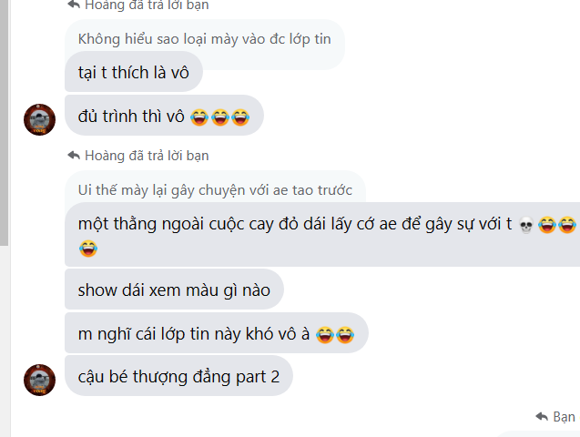

Thượng đẳng cấp tối đa khi nghĩ rằng lớp tin muốn vô thì vô , ra thì ra

Thách thức cả lớp giết được mình mới sợ :0
Anh bạn Hoàng Tâm của chúng ta còn bảo rằng cảm ơn tôi vì đã cho
anh ấy biết rằng cả lớp đang ghét anh ấy trong khi người bình thường
họ đã biết từ lâu rồi :)). Thiểu năng cấp độ cuối
BẰNG CS50 HARVART CỦA HOÀNG TÂM :000
Anh ấy nói rằng anh ấy đạt được cái bằng này và có thể kiếm được việc làm
trong 10 năm sau bằng nghề IT và sẽ giàu hơn 2 tất đất của anh Lân
Trong khi như mọi người đã thấy rằng cái hình này còn mờ hơn cả Lon
gái nhật và anh ấy không thể gửi được file PDF chứa tấm hình bằng tốt nghiệp CS50 của anh ấy
Tổng hợp một số pha phản biện như con cặc đến từ vị trí owner của HTlibrary
Có vẻ như sau khi bị phản gank quá gắt , anh ấy quyết định bẻ qua chuyện khác
bằng cách khịa anh Lân về thành tích học tập
Sau khi cãi nhau thua thì anh khè thành thích học tập ra vì thua 5 lần cãi nhau mặc dù
đéo ai hỏi cả , mọi người có ai hỏi không
THÀNH TÍCH ĐÁNG NỂ NHẤT TÔI TỪNG BIẾT
Như mọi người đã thấy anh ấy có thành thích học tập thật đáng nể
đứng 22/23 , và thật may mắn cho anh ấy vì có 1 người trong lớp
bị khống chế môn nào đó nên anh ấy mới được đứng trong danh sách này
Khoe ngu và cái kết Ngu
Anh ấy đi khoe và sau đó bị khoe ngược lại , thấy không ổn nên lôi chuyện học tập và bằng cấp
ra để nói và bị khoe lại bằng cấp bởi anh Lân (Bổ sung cho câu chuyện phía trên)
Cậu bé với ước mơ IT triệu đô khinh thường bằng học nghề
Sau khi khoe thành tích học tập, anh ấy bắt đầu khè rằng anh Lân không có đủ trình
cho tấm bằng đại học , sau khi anh Lân khoe rằng mình có bằng học nghề thì anh Tâm
xù lông dái lên và cho rằng tuổi này chỉ nên đi học và anh ấy có thể chấp con mẹ 2 tấm
bằng của anh Lân về tiền lương và cái tương lai dái chó của Tôn lầm
Chà tôi nghĩ rằng nhím mà gặp anh bạn này thì sẽ lăn ra mà đột tử mất
vì nó biết có người còn xù lông dái nhanh hơn cả nó
In Hoàng Tâm mind : chà thằng Lân đang xem thường bằng CS50 cực chất của mình ư
đmmm mình phải khè lại cái bằng thợ điện rách của nó mới được
và thế là anh Tôn lầm lại xù lông dái lên và cãi mặc dù đéo ai hỏi
Chà , spam một câu vô nghĩa đến lúc người ta nói thì bảo thượng đẳng ?????
Anh ấy spam mỗi một câu duy nhất
Trích dẫn , nguồn : "Tặc óc câm"
Đụ má mày là người hay thú vậy
Và tôi khá chắc mọi người đã biết rằng , Tâm là thú chứ người nào mà ngu như này 🐧🐧🐧